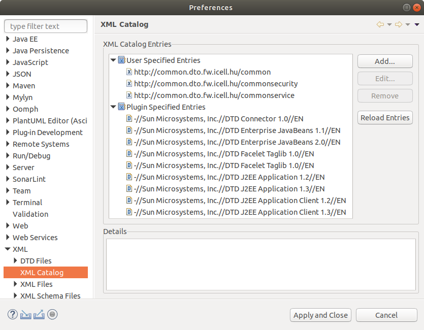

Customizable XSD generation and validation.
The XSD catalog itself is a rather complicated topic within the XSD standard. It is not important to go deeper into it, we will only deal with what we need below, and it is worth using it for modularization both in the framework and in projects. The whole "XSD catalogue" is an OASIS standard, which is xml-catalogs can be found at.
General
We generally use XSD to get rid of the basic valadication of DTO objects, such as:
-
input string length - how long the field value can be (character length)
-
mandatory - mandatory to fill in or not
-
minimum, maximum values - for example minimum 0, 1970-01-01, -3.14, …
-
type mandatory - date, int, boolean, etc…
-
defined values - ENUM
-
string, date pattern - "\d{4}-\d{2}-\d{2}T\d{2}:\d{2}:\d{2}(.\d{1,3})?Z", "[a-zA-Z0-9\-@.]{6,30}", …
-
other XSD options…
In addition, it greatly assists object-oriented DTO generation, recycling - a well-written XSD structure can be very easily used for coding.
It is also important that we use JAVA language but the REST interface objects we write are defined in XSD and can be passed to a connected external client. You can generate your own DTOs from XSD in any language without having to rewrite them manually.
We try to keep the XSD as complex and documented as possible because we use an openapi-jaxb plugin that complements the DTOs with openapi annotations, where all data, restrictions and description. Thanks to this Swagger can also serve as a complete REST interface documentation for the developer, developer, tester, frontend, server and client, without the need to invest extra effort in post-documentation of the product.
Lest it seem that XSD is perfect, I will mention one of its biggest drawbacks - if the input is not XML (e.g. JSON), we can only solve the validation by extra transformation to XML. But the above listed advantages can save so much time that the price is we are willing to pay - so far all problems could be solved…
Sample
Suppose we have a structure consisting of several XSDs. In this case we want a user DTO with
has 2 elements, userName and password, these must satisfy the following constraints:
<?xml version="1.0" encoding="UTF-8"?>
<xsd:schema xmlns:xsd="http://www.w3.org/2001/XMLSchema" xmlns="http://common.dto.coffee.icellmobilsoft.hu/common"
targetNamespace="http://common.dto.coffee.icellmobilsoft.hu/common" elementFormDefault="qualified"
attributeFormDefault="unqualified">
...
<!-- SIMPLE TYPES -->
<xsd:simpleType name="SimpleText255Type">
<xsd:restriction base="xsd:string">
<xsd:maxLength value="255" />
</xsd:restriction>
</xsd:simpleType>
<xsd:simpleType name="EmailType">
<xsd:restriction base="xsd:string">
<xsd:maxLength value="200" />
<xsd:pattern value="[A-Za-z0-9._%+-]+@[A-Za-z0-9.-]+\.[A-Za-z]{2,4}" />
</xsd:restriction>
</xsd:simpleType>
...
<xsd:schemaTraditional solution
<?xml version="1.0" encoding="UTF-8"?>
<xsd:schema xmlns:xsd="http://www.w3.org/2001/XMLSchema"
xmlns:common="http://common.dto.coffee.icellmobilsoft.hu/common" //(1)
xmlns="http://common.dto.coffee.icellmobilsoft.hu/commonservice"
targetNamespace="http://common.dto.coffee.icellmobilsoft.hu/commonservice"
elementFormDefault="qualified" attributeFormDefault="unqualified">
<xsd:import namespace="http://common.dto.coffee.icellmobilsoft.hu/common" schemaLocation="common.xsd"/> //(2)
...
<xsd:complexType name="UserType">
<xsd:sequence>
<xsd:element name="userName" type="common:EmailType"> //(3)
<xsd:annotation>
<xsd:documentation>User login id.
</xsd:documentation>
</xsd:annotation>
</xsd:element>
<xsd:element name="password"
type="common:SimpleText255Type"> //(3)
<xsd:annotation>
<xsd:documentation>User login password hash.
</xsd:documentation>
</xsd:annotation>
</xsd:element>
</xsd:sequence>
</xsd:complexType>
...
<xsd:schema-
xml namespace definition, named "common" and the import "http://common.dto.coffee.icellmobilsoft.hu/common" will be the source
-
Mount (import) the referenced namespace, using file path.
-
Reference to a type in another XSD.
Advantages:
-
Easy to manage and read addictions.
-
All XSD/XML management programs can use it natively, code assist works, native XSD validation.
Disadvantages:
-
In code, validation under XSD requires writing a custom resolver for external dependencies.
-
The xsd file defined in the
schemaLocationpath must be locally available. -
Within a project, an import from another module can be very cumbersome (e.g. "../../../../../../../../../../target/unpacked-files/coffee-resources/xsd/hu/icellmobilsoft/coffee/dto/common/common.xsd").
-
Not customizable (explained in more detail below).
Solution with catalog
In this case 2 files are required:
<?xml version="1.0" encoding="UTF-8"?>
<xsd:schema xmlns:xsd="http://www.w3.org/2001/XMLSchema"
xmlns:common="http://common.dto.coffee.icellmobilsoft.hu/common" //(1)
xmlns="http://common.dto.coffee.icellmobilsoft.hu/commonservice"
targetNamespace="http://common.dto.coffee.icellmobilsoft.hu/commonservice"
elementFormDefault="qualified" attributeFormDefault="unqualified">
<xsd:import namespace="http://common.dto.coffee.icellmobilsoft.hu/common"/> //(2)
...
<xsd:complexType name="UserType">
<xsd:sequence>
<xsd:element name="userName" type="common:EmailType"> //(3)
<xsd:annotation>
<xsd:documentation>Felhasználó bejelentkezési azonosító.
</xsd:documentation>
</xsd:annotation>
</xsd:element>
<xsd:element name="password"
type="common:SimpleText255Type"> //(3)
<xsd:annotation>
<xsd:documentation>Felhasználó bejelentkezési jelszó hash.
</xsd:documentation>
</xsd:annotation>
</xsd:element>
</xsd:sequence>
</xsd:complexType>
...
<xsd:schema-
xml namespace definition, named "common" and the import "http://common.dto.coffee.icellmobilsoft.hu/common" will be the source
-
Mount (import) the referenced namespace - only namespace reference (no file path).
-
Reference to a type in another XSD.
<?xml version="1.0" encoding="UTF-8" standalone="no"?>
<catalog xmlns="urn:oasis:names:tc:entity:xmlns:xml:catalog">
<public publicId="http://common.dto.coffee.icellmobilsoft.hu/common" //(1)
uri="maven:hu.icellmobilsoft.coffee.dto.xsd:coffee-dto-xsd:jar::!/xsd/hu/icellmobilsoft/coffee/dto/common/common.xsd" />
</catalog>-
xml namespace definition, "http://common.dto.coffee.icellmobilsoft.hu/common" import namespace where to find the file source.
Advantages:
-
Customizable
-
Independent XSD files can be imported that are not in the project.
-
One place for all imported XSD files.
-
Validation by XSD in code is easier than in the general solution and is universal.
Disadvantages:
-
Setting required for XSD/XML management programs, or producing your own catalog file.
Use cases
Imagine a case where Coffee generates some very basic DTO objects. This is important so that a common "generic" code base can be created in Coffee, For example, a generic error handling, logging, apache client response processing, etc (where DTOs are involved). If there is no generic class to cast types to, such boilercode is not possible in Coffee, since only the "Object" itself could be referenced. Nor is it a solution for Coffee to force some fixed types, because then projects would not be able to customize and extend it (e.g. replacing XMLGregorianCalendar with java.time.OffsetDateTime). Traditional XSD import is not appropriate in this situation, because it looks for the import xsd path file in a fixed location, which is not part of our project but part of Coffee, and refers to a relative path within Coffee.
The catalog file provides a solution. The catalog is a separate file, you can make your own version of it. In it, we only use the basic XSDs that meet our needs. Whatever does not suit us, we have to copy the original XSD with everything and extend it with the Coffee DTO type. If the namespace and the complexType names are not changed, it will generate the same DTO class as in Coffee. This will be found by JAVA via the classpath and all Coffee logic can continue to work. If the change is very drastic you can use the CDI to replace the Coffee logic completely.
Generation
The generation is done in our case with maven. Example:
<dependencies>
<dependency>
<groupId>hu.icellmobilsoft.coffee.dto.xsd</groupId>
<artifactId>coffee-dto-xsd</artifactId> //(1)
</dependency>
...
<dependency>
<groupId>org.eclipse.microprofile.openapi</groupId>
<artifactId>microprofile-openapi-api</artifactId> //(2)
<version>3.0.0</version>
</dependency>
</dependencies>
<build>
<plugins>
<plugin>
<groupId>com.helger.maven</groupId>
<artifactId>jaxb40-maven-plugin</artifactId> //(3)
<version>0.16.0</version>
<executions>
<execution>
<id>coffee-super</id>
<goals>
<goal>generate</goal>
</goals>
<configuration>
<strict>false</strict>
<!-- https://github.com/highsource/maven-jaxb2-plugin/wiki/Catalogs-in-Strict-Mode -->
<catalog>src/main/resources/xsd/hu/icellmobilsoft/coffee/dto/super.catalog.xml</catalog> //(4)
<schemaIncludes>
<include>xsd/hu/icellmobilsoft/coffee/dto/super.xsd</include> //(5)
</schemaIncludes>
<bindingIncludes>
<include>xsd/hu/icellmobilsoft/coffee/dto/bindings.xjb</include> //(6)
</bindingIncludes>
<generateDirectory>${project.build.directory}/generated-sources/src/main/java</generateDirectory> //(7)
</configuration>
</execution>
</executions>
<configuration>
<verbose>true</verbose>
<schemaDirectory>src/main/resources</schemaDirectory>
<args>
<arguments>-openapify</arguments> //(8)
<arguments>-Xfluent-api</arguments> //(9)
<arguments>-Xannotate</arguments> //(10)
</args>
<plugins>
<plugin>
<groupId>hu.icellmobilsoft.jaxb</groupId>
<artifactId>openapi-jaxb-plugin</artifactId> //(8)
<version>2.0.0</version>
</plugin>
<plugin>
<groupId>net.java.dev.jaxb2-commons</groupId>
<artifactId>jaxb-fluent-api</artifactId> //(9)
<version>2.1.8</version>
</plugin>
<plugin>
<groupId>org.jvnet.jaxb2_commons</groupId>
<artifactId>jaxb2-basics-annotate</artifactId> //(10)
<version>1.0.4</version>
</plugin>
<plugin>
<groupId>com.fasterxml.jackson.core</groupId>
<artifactId>jackson-databind</artifactId> //(10)
<version>2.9.9.1</version>
</plugin>
</plugins>
</configuration>
</plugin>
</plugins>
</build>
...-
This package contains the XSD files
-
The generated DTOs contain OpenApi annotations, and to compile the generated classes, it is necessary to include the specification
-
Maven plugin which controls the generation
-
XSD catalog file path
-
Main XSD to be generated. This can actually be several small ones, but then you have to keep modifying pom.xml whenever a change occurs. It is simpler to list them in a central xsd. Also in such cases the global settings would have to be handled individually.
-
XJB file, here you can set customized deviations, for example XMLGregorianCalendar → java.time replacement…
-
Where to generate the classes. The plugin will put this automatically in the source code sources, Eclipse and IDEA will handle it automatically.
-
Switch to generate the OpenApi annotations,
hu.icellmobilsoft.jaxb:openapi-jaxb-pluginby plugin. -
Switch to generate the methods for fluent encoding, by
net.java.dev.jaxb2-commons:jaxb-fluent-apiplugin. It can be very useful, it can save a lot of unnecessary lines in the business log. -
Switch to use javax.annotation.* annotations in the XSD and also generate according to it. For more details see jaxb2-annotate-plugin and stackoverflow.com
OpenApi, Swagger
As already mentioned, the generated DTOs are part of the complete documentation. Preferably they should contain all the information that may be needed by other developers, testers, organizers, etc… To do this, the XSD elements should be filled as much as possible when creating the XSD, because the generator will use them to generate the documentation annotations.
These annotations (OpenApi) will be displayed in a user interface using a program called Swagger.
..
<xsd:simpleType name="EntityIdType">
<xsd:restriction base="xsd:string">
<xsd:maxLength value="30" />
<xsd:pattern value="[+a-zA-Z0-9_]{1,30}" />
</xsd:restriction>
</xsd:simpleType>
<xsd:group name="BaseAuditUserGroup">
<xsd:sequence>
<xsd:element name="creatorUser" type="EntityIdType"
minOccurs="0" />
<xsd:element name="modifierUser" type="EntityIdType"
minOccurs="0" />
</xsd:sequence>
</xsd:group>
<xsd:group name="BaseAuditGroup">
<xsd:sequence>
<xsd:group ref="BaseAuditDateGroup" />
<xsd:group ref="BaseAuditUserGroup" />
</xsd:sequence>
</xsd:group>
<xsd:complexType name="AbstractAuditDtoType">
<xsd:complexContent>
<xsd:extension base="AbstractDtoType">
<xsd:sequence>
<xsd:group ref="BaseAuditGroup" />
</xsd:sequence>
</xsd:extension>
</xsd:complexContent>
</xsd:complexType>
...This results in the generation of a class - a subset of the following:
...
@Schema(name = "creatorUser", title = "creatorUser", description = "creatorUser", maxLength = 30, pattern = "[+a-zA-Z0-9_]{1,30}")
protected String creatorUser;
...The documentation on the user interface shows this:
The example doesn’t include xsd:documentation because I couldn’t find a suitable tiny example, but generating it works.
XSD editors
If no catalog file is used, all XSD editors can usually handle imports. Using catalog complicates the situation. The catalog file itself is an additional configuration file, does not necessarily need to be on top of the XSD files.
In XSD management software, this must be added separately to resolve the referenced namespace prefixes. Since most of us developers use Eclipse or IDEA, we will describe these in more detail.
IDEA
This does not cause any particular problems in the configuration, as IDEA’s XSD handler seems to be able to read the project settings from maven pom.xml, so the catalog file can be read. True, no one has tried it with an external catalog file…
Eclipse
For Catalog XSD, we have to manually create our own catalog file, since that is what the generator uses, does not correspond to the Eclipse XSD/XML plugin. The plugin itself cannot read from a maven structure the way the generator does. The Eclipse plugin requires a fixed absolute path in the catalog, which is unique for each developer, it can’t work with relative paths (which I think is ruled out by the linking process itself).
For help, a sample of what you need to manually create:
<?xml version="1.0" encoding="UTF-8" standalone="no"?>
<catalog xmlns="urn:oasis:names:tc:entity:xmlns:xml:catalog">
<public publicId="http://common.dto.coffee.icellmobilsoft.hu/common"
uri="/home/ss/PROJECTS/ICELL/COFFEE/workspace/coffee/coffee-dto/coffee-dto-xsd/src/main/resources/xsd/hu/icellmobilsoft/coffee/dto/common/common.xsd" />
<public publicId="http://common.dto.coffee.icellmobilsoft.hu/commonservice"
uri="/home/ss/PROJECTS/ICELL/COFFEE/workspace/coffee/coffee-dto/coffee-dto-xsd/src/main/resources/xsd/hu/icellmobilsoft/coffee/dto/common/commonservice.xsd" />
<public publicId="http://common.dto.coffee.icellmobilsoft.hu/commonsecurity"
uri="/home/ss/PROJECTS/ICELL/COFFEE/workspace/coffee/coffee-dto/coffee-dto-xsd/src/main/resources/xsd/hu/icellmobilsoft/coffee/dto/common/commonsecurity.xsd" />
</catalog>Everyone must set their own route!
Catalog import
The Eclipse menus are the next step:
-
File→Import -
Within the window, down
XML→XML Catalog -
Then
Nextand enter the above mentioned manually processed catalog file.
If the paths are filled correctly Eclipse can resolve the namespace references from now on and the code assist will work.
Catalog delete
If changes are made to the XSD structure then again Catalog import but first you have to delete the old one.
This should be done as follows:
-
Window→Preferences -
In the window navigate to
XML→XML Catalog. -
You will see something like this: 
-
We select the
User Specified Entriesitems, thenRemove -
Then you can go again to Catalog import
|
Caution
|
Do not attempt to make any changes to User Specified Entries,
because they will be saved incorrectly by Eclipse after saving and unlocking the Catalog will not work.
This may be some Eclipse Bug.
|
XML Schema validation
In Catalog solution there is an example of the super.catalog.xml file. In it you can see that the file is accessed via maven dependency:
uri="maven:hu.icellmobilsoft.coffee.dto.xsd:coffee-dto-xsd:jar::!/xsd/en/icellmobilsoft/coffee/dto/common/common.xsd"
This actually refers to the following:
...
<dependency>
<groupId>hu.icellmobilsoft.coffee.dto</groupId>
<artifactId>coffee-dto</artifactId>
</dependency>
...So it unpacks from the .m2/repository/hu/icellmobilsoft/coffee/dto/coffee-dto/_VERSION_/coffee-dto.jar file the XSD file /xsd/hu/icellmobilsoft/coffee/dto/common/common.xsd.
|
Important
|
The following solution requires java 9+! |
The maven: protocol itself is unknown to java.net.URL, so we need to write a handler for it:
Unresolved directive in xsd-catalog.adoc - include::../../../coffee-tool/src/main/java/hu/icellmobilsoft/coffee/tool/protocol/handler/MavenURLHandler.java[lines=29..44]This handler still needs to be registered as follows:
-
Create a text file named
java.net.spi.URLStreamHandlerProvider(without extension) -
Include the content of the handler you have created. If you have more than one of them, you can create a new line for each one.
In our case it will look like this:
hu.icellmobilsoft.coffee.tool.protocol.handler.MavenURLStreamHandlerProviderFrom now on, the java 9+ XSD Catalog handler can read the path known by the generator.
|
Note
|
In order for JAXB itself to be able to validate via Catalog, it was necessary to create some classes, which are not yet Coffee ready. This will be documented later, until then you will have to look at projects. |